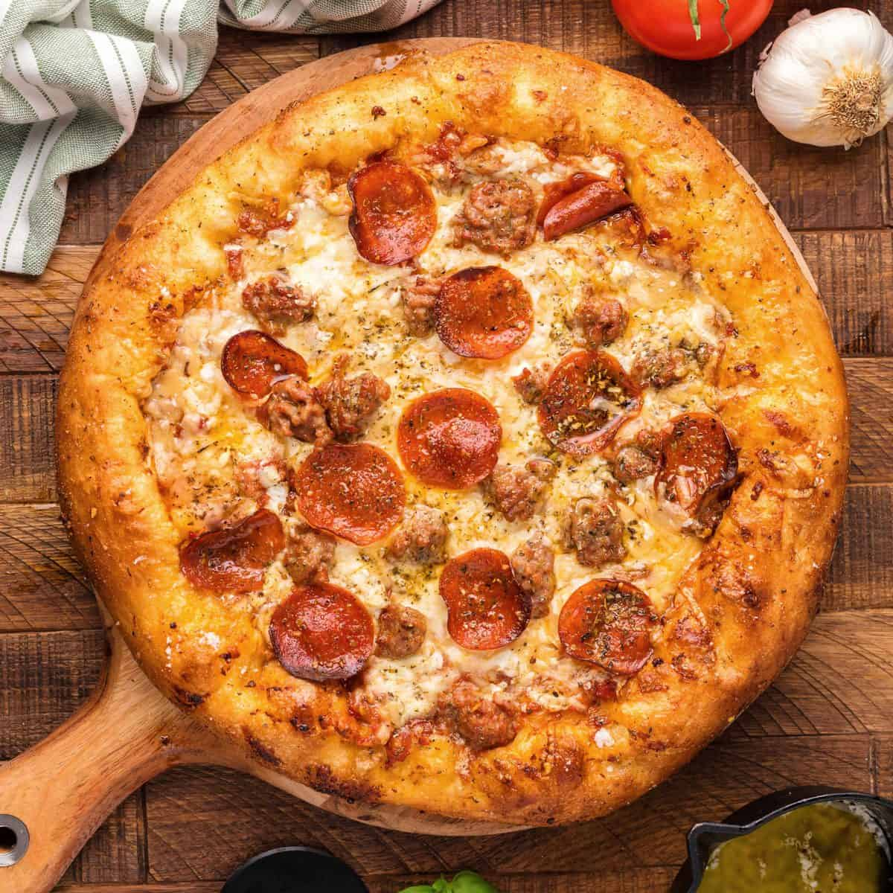
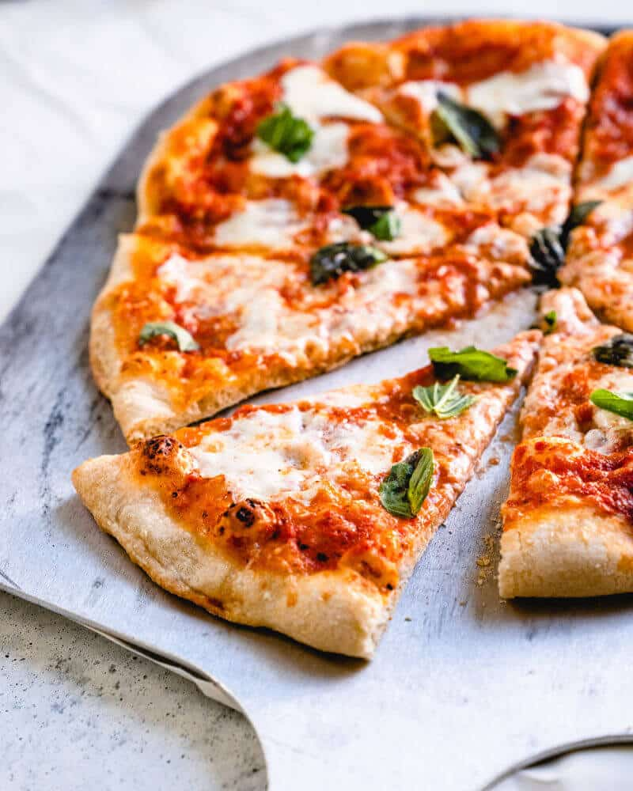

Pizza is a savory dish of Italian origin consisting of a usually round, flattened base of leavened wheat-based dough topped with tomatoes, cheese and various other ingredients such as anchovies, mushrooms, olives, pineapple, meat etc. which is baked at a high temperature, traditionally in a wood-fired oven. A small pizza is sometimes called a pizzetta. A person who makes pizza is known as pizzaiolo

There are a lot of various flavours of pizza. But some of the most famous ones are:
Pepperoni pizza is a classic American favorite featuring a crispy or chewy crust topped with tangy tomato sauce, gooey melted mozzarella cheese, and slices of spicy, savory pepperoni—a cured sausage made from beef and pork. As it bakes, the pepperoni crisps up and curls into little cups, adding a smoky kick to every bite. It's simple, satisfying, and loved for its bold flavor and comforting texture.
Cheese pizza is the ultimate comfort food—simple, timeless, and universally loved. It features a golden, chewy crust topped with tangy tomato sauce and a generous layer of melted mozzarella cheese. The creamy richness of the cheese pairs perfectly with the bright acidity of the sauce, creating a mouthwatering balance of flavors. Whether it's a thin New York slice or a deep-dish Chicago pie, cheese pizza is the go-to base for countless variations and a favorite for purists who love pizza in its most classic form.

Margherita pizza is a timeless Italian classic that celebrates simplicity and freshness. It features a thin, airy crust topped with vibrant tomato sauce, creamy mozzarella cheese (often buffalo mozzarella), and fragrant fresh basil leaves. A drizzle of extra virgin olive oil finishes it off, creating a perfect harmony of flavors and colors—red, white, and green—symbolizing the Italian flag. Born in Naples and famously named after Queen Margherita in the 19th century, this pizza is all about balance and tradition
